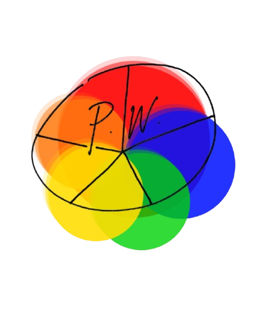
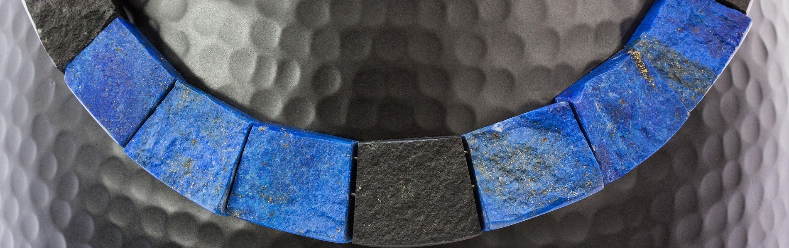

Pigment Wheel

The Red That Poisoned Kings
The brilliant red that poisoned Renaissance painters—and why we still can't look away
Suspendisse potenti.
Phasellus mollis ut turpis sit amet porta. Vestibulum malesuada mi ac lorem aliquam sodales. Donec massa nisi, venenatis nec placerat at, condimentum vel lectus. Cras massa arcu, efficitur ut massa eu, finibus porta purus. Sed egestas consequat augue efficitur dignissim.scelerisque commodo.
Suspendisse potenti.
Phasellus mollis ut turpis sit amet porta. Vestibulum malesuada mi ac lorem aliquam sodales. Donec massa nisi, venenatis nec placerat at, condimentum vel lectus. Cras massa arcu, efficitur ut massa eu, finibus porta purus. Sed egestas consequat augue efficitur dignissim.scelerisque commodo.
Alchemy Lab
Donec at commodo diam. Ut aliquet turpis a condimentum tincidunt. Vestibulum diam mi, porttitor eu mollis quis, facilisis sit amet urna. Nullam eu gravida massa, quis vulputate tellus:
- Nec massa nisi, venenatis nec placerat at, condimentum vel lectus.
- Cras massa arcu, efficitur ut massa eu, finibus porta purus.
- Sed egestas consequat vaugue efficitur ignissim. Proin rutrum libero ipsum, ut sagittis mi fermentum in.
- Integer at sem turpis. Praesent ut tempus sapien, in iaculis elit. Cras maximus purus vitae risus ultrices, et euismod libero imperdiet. Mauris feugiat diam ut scelerisque commodo.
Vestibulum diam mi
Donec at commodo diam. Ut aliquet turpis a condimentum tincidunt. Vestibulum diam mi, porttitor eu mollis quis, facilisis sit amet urna. Nullam eu gravida massa, quis vulputate tellus: Proin rutrum libero ipsum, ut sagittis mi fermentum in. Integer at sem turpis. Praesent ut tempus sapien, in iaculis elit.
Famous artists that used Ultramarine:
- Donec at commodo diam.
- Donec at commodo diam.
- Donec at commodo diam.


Donec at commodo diam. Ut aliquet turpis a condimentum tincidunt. Vestibulum diam mi, porttitor eu mollis quis, facilisis sit amet urna. Nullam eu gravida massa, quis vulputate tellus.
Donec at commodo diam. Ut aliquet turpis a condimentum tincidunt. Vestibulum diam mi, porttitor eu mollis quis, facilisis sit amet urna. Nullam eu gravida massa, quis vulputate tellus.
Donec at commodo diam. Ut aliquet turpis a condimentum tincidunt. Vestibulum diam mi, porttitor eu mollis quis, facilisis sit amet urna. Nullam eu gravida massa, quis vulputate tellus.
Did you know?
Donec at commodo diam. Ut aliquet turpis a condimentum tincidunt. Vestibulum diam mi, porttitor eu mollis quis, facilisis sit amet urna. Nullam eu gravida massa, quis vulputate tellus: Proin rutrum libero ipsum, ut sagittis mi fermentum in. Integer at sem turpis. Praesent ut tempus sapien, in iaculis.